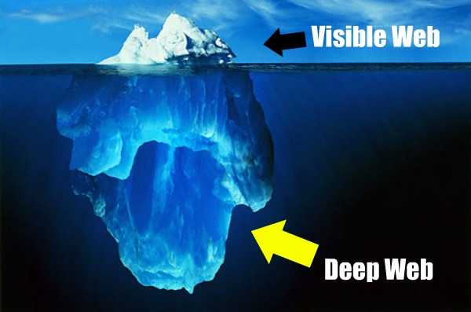

2- ONLINE PRIVACY
2.1 DE WEERSPIEGELING VAN ONZE GEDACHTEN, INTERNET
Introductie
De 'draagbare' computer was vijftien jaar geleden nog zo zwaar en groot dat je die nauwelijks kon tillen. De ongemakkelijke data-helm en data-handschoenen om een virtuele werkelijkheid binnen te treden, liggen nog vers in het geheugen. Met microchip en nanotechnologie wordt de technologie draagbaar en mobiel.
Het internet is in feite een andere wereld waarin de mens in een andere dimensie zijn taken volbrengt en verlangens vervult. De offline wereld, de wereld zoals we die van ruim 2000 jaar geleden kennen, voldoet niet meer aan onze verwachtingen. Mensen zijn veeleisend geworden. Daarmee is de online wereld een andere dimensie ingetreden, een dimensie die wel aan onze vraag naar informatie, goederen en diensten kan voldoen. Onze samenleving bestaat niet meer zonder deze online wereld. De online dimensie is een wereld waar mensen hun handen en voeten niet meer nodig hebben om overal te komen. Het is daarom ook goed om te zien hoe de online wereld onze offline wereld heeft veranderd. Het internet heeft onze persoonlijkheid veranderd, maar ook de wijze waarop we bijvoorbeeld zaken doen. Bedrijven die zichzelf gaan profileren in de online wereld omdat ze in de offline wereld zich bijna niet staande kunnen houden tegenover de concurrentie.
Daarbij ziet het internet er niet bepaald futuristisch uit. Er klinken bijvoorbeeld geen vervormde computerstemmen en er knipperen geen dreigende rode lichtjes, zoals we die vroeger in sciencefiction films zagen. Zie het meer als de digitale assistent die ons leven makkelijker en aangenamer maakt. Een vriendelijk ogende dimensie die ons alleen maar wilt helpen.
De online wereld is dus in vele opzichten een verlengde van de offline wereld waarin we leven. Het hele internet, ook wel verbeeld als 'Het internet-huis' is dan ook een weerspiegeling van onze gedachten, een verlengstuk van ons dagelijks leven. Mede door de komst van vele technologisch
 e ontwikkelingen breid deze verlenging zich steeds meer uit, en we lijken er mee te vergroeien. Men is niet altijd bewust van alle nieuwe technologische ontwikkelingen die zich langzaam om hen heen vormen. Maar het groeit wel met ons mee en het word een steeds groter onderdeel van ons dagelijks leven. Het groeit als het ware vast aan ons lichaam.
e ontwikkelingen breid deze verlenging zich steeds meer uit, en we lijken er mee te vergroeien. Men is niet altijd bewust van alle nieuwe technologische ontwikkelingen die zich langzaam om hen heen vormen. Maar het groeit wel met ons mee en het word een steeds groter onderdeel van ons dagelijks leven. Het groeit als het ware vast aan ons lichaam. 2.2 DEFINITIE ONLINE PRIVACY
De wet op internet
Er zijn maar weinig privacy wetten specifiek voor het internet. De achterliggende gedachte bij veel van deze wetten is dat wat offline geldt ook online moet gelden. Toch zijn er genoeg wetten waarbij men in de communicatie of bij het doen van zaken in de 'fysieke wereld' nooit tegenaan loopt, maar op internet wel. Men verstuurt en ontvangt gegevens en maakt gebruik van geautomatiseerde systemen. Daarbij worden wetten over gegevensverwerking en kopiëren relevant. Voorbeelden hiervan zijn: auteursrecht, privacy wetgeving, computercriminaliteit, de vrijheid van meningsuiting en aansprakelijkheid van internetdienstverleners. Als je je in de online omgeving begeeft kom je over het algemeen dus eerder in aanraking met de grenzen van privacy.
Privacy houdt niet meer op bij de voordeur. Men heeft recht op bescherming en recht op privacy zowel in de openbare wereld als op het internet. Hier komt ook de persoonlijke levenssfeer weer terug die ook in de offline wereld geldt. Er bestaat in Nederland geen algemene ''wet op de privacy''. Er zijn diverse wetten die elk een bepaald aspect van privacy in Nederland regelen. De belangrijkste en bekendste wet is de Wet Bescherming Persoonsgegevens. Deze wet regelt hoe persoonlijke gegevens opgeslagen en verwerkt mogen worden. Regels over aftappen en afluisteren staan weer in de Wet Computercriminaliteit en in de Telecommunicatiewet. Het briefgeheim is vastgelegd in de Grondwet, maar deze geldt niet voor e-mail. Hier is dus een groot verschil tussen offline en online privacy zichtbaar. De Wet Bescherming Persoonsgegevens (WBP) regelt onder welke voorwaarden persoonsgegevens verwerkt mogen worden. Persoonsgegevens zijn alle gegevens die 'herleidbaar zijn tot een bepaald individu'. Het bekendste voorbeeld is iemands naam of adres. Aan een foto is iemand ook te herkennen. Een foto is dus net zo goed een persoonsgegeven. Het houdt niet op bij feitelijke gegevens alleen. Gegevens die een waardering over een persoon inhouden, bijvoorbeeld het IQ, kunnen ook persoonsgegevens zijn. Deze wet heeft ook de nodige consequenties voor internetaanbieders en –gebruikers, omdat bijvoorbeeld een e-mailadres ook een persoonsgegeven is. Het publiceren van persoonsgegevens van anderen op het internet valt namelijk snel onder de strenge regels van WBP . Er zijn dus vele vormen van privacy bescherming, die gelden zowel voor individuen als voor bedrijven. Toch zijn individuen vaak in het nadeel ten opzichten van bedrijven. Bijvoorbeeld bij het gebruiken van online services.
Elke site moet een privacyverklaring hebben als deze persoonsgegevens verzamelt. Dit kan bijvoorbeeld door een zogeheten logfile bij te houden met wie de site bezocht heeft. De site moet daarbij uitleggen welke gegevens er worden verzameld en wat daarmee gebeurt. Veel mensen denken echter dat als een site een privacy verklaring heeft het wel goed zit met de bescherming van hun privacy. Dit is niet altijd waar. Een privacyverklaring zegt alleen wat een bedrijf doet met persoonlijke gegevens van anderen. Doorverkopen aan adverteerders is bijvoorbeeld toegestaan wanneer dat in de privacyverklaring staat. Een aantal voorbeelden die in zo'n privacy verklaring moeten staan, zijn:
- Cookies: Welke informatie wordt er via cookies bijgehouden? Een cookie is een stukje informatie dat een server meestuurt met elke webpagina. Hierbij wordt nagegaan welke pagina's er bezocht worden.
- Webbezoek: Welke gegevens houdt de site bij over het klik gedrag en wat gebeurt hier mee? Worden deze doorverkocht aan adverteerders?
- Zoekopdrachten: Bewaart de site zoekopdrachten om bijvoorbeeld te kunnen kijken wat populaire zoektermen zijn? Dat mag, maar als de site ook bijhoudt welke bezoekers welke zoekopdrachten uitvoeren dan moet men dat melden in de privacyverklaring.
- Contactformulieren en adressen: Wat gaat men doen met de gegevens die iemand invult in het contactformulier?
Nieuwsbrieven en andere mailingen: Hoe wordt dit bestand samengesteld? Hoe komt iemand op een verzendlijst en hoe kom je er weer vanaf?
- Registratie van gebruikers: Als gebruikers van een site zich kunnen registreren, welke gegevens wil men dan en wat gebeurt hiermee? Hoe kan een gebruiker zijn account weer opheffen? Worden de gegevens dan ook echt verwijderd?
Blacklist Internet staat structureel vol met verspreiders van spam, vandalen en overlastplegers. Veel sites maken daarom vaak gebruik van filters en zwarte lijsten om ongewenste uitingen te blokkeren, en gebruikers te beschermen. Voor individuen is geblokkeerd worden niet zo'n probleem, maar als sites mensen gaan blokkeren (en een zwarte lijst met geblokkeerde gebruikers delen) kunnen ze tegen privacywetgevingen aanlopen. Een zwarte lijst is namelijk ook een 'verwerking' van persoonsgegevens. De lijst mag alleen gebruikt worden voor noodzakelijk 'gerechtvaardigd belang'.
E-mail is vogelvrij
In de grondwet staat dat telefoongesprekken, papieren post en telegraafberichten geheim zijn. Dit briefgeheim geldt echter niet voor 'elektronische communicatie'. Eind jaren negentig was er een voorstel om dit te veranderen, maar zonder succes. Google slaat al sinds het ontstaan van Google's mail service, Gmail, al het mailverkeer van gebruikers op. Ook wordt de inhoud van alle e-mails uitgelezen en omgezet in door Google bruikbare data.
2.3 LIEF DATA-DAGBOEK,
- SOCIALE MEDIA
Vroeger hielden de meeste mensen een dagboek bij waarin zij alles over hun eigen leven vertelden. Het was op allerlei manieren vormgegeven, soms heel simpel maar ook wel met korte filosofische teksten of illustraties. Het was een schetsboek van het leven.
Bewapend met slot en grendel konden potentiële indringers, die op jacht waren naar privégegevens van buitenaf worden geweerd. De diepste geheimen zagen eigenlijk nooit het daglicht. Tegenwoordig is het dagboek ingeruild voor een online dagboek: een blog. Een weblog of een blog wordt ook gedefinieerd als een 'persoonlijk dagboek' dat regelmatig wordt bijgehouden op het internet. De originele vorm bestaat vooral uit tekst die in de omgekeerde chronologische volgorde verschijnt. Voor ontwerpers is dit ook een manier om inspiratie beelden te verzamelen en te delen op het web. Een microblog is echter een ander verhaal. Het stelt gebruikers in staat kleine berichten op het internet te plaatsen. Daarnaast speelt de dienst in op de behoeften om constant verbonden te blijven en alles digitaal vast te leggen. De meest bekende microblog met ruim 243 miljoen actieve gebruikers per maand is Twitter. Deze dienst stelt je in staat om met behulp van slechts 140 tekens over je leven te praten en je 'diepste' geheimen en gevoelens te delen.
Een groot verschil met het traditionele dagboek en Twitter is dat een Tweet een vluchtig karakter heeft. Een Tweet wordt waarschijnlijk maar één keer gelezen. De mystiek van een geschreven dagboek is verdwenen met de komst van het bloggen. Bloggen heeft het huidige format van informatievergaring veranderd. We zijn tegenwoordig ook snel verveeld met de huidige formats. Het lezen van bijvoorbeeld lange of persoonlijke stukken tekst is niet meer vanzelf sprekend. Er is veel afleiding in de online omgeving, waardoor geschreven nieuwsartikelen het vaak moeten afleggen tegen onder andere een video verslag of een foto reportage.
Een dagboek was tastbaar en natuurlijk een beleving op zichzelf. Door het lezen van een afgezonderde persoonlijke mening ontstond die beleving. Het uiten van je mening in een Tweet roept die beleving niet op. Je bent een van de vele, jouw persoonlijkheid of innerlijk ('the self') verdwijnt. Het kan gezien worden als een verandering van analoog naar digitaal, maar dus met de bijbehorende consequenties.
We zijn met de jaren zelf steeds meer persoonlijke informatie op het internet gaan zetten. Bloggen heeft de verspreiding van informatie veranderd en ervoor gezorgd dat het laagdrempelig is geworden. Sinds de opkomst van het internet is er een behoefte ontstaan om ons privéleven op het internet te delen. In het hedendaagse medialandschap worden we haast verplicht om sociaal te zijn. Het is heel normaal geworden om van alles te delen op Facebook, Twitter, Tumblr etc. Daarbij wordt het tegenwoordig raar gevonden om bijvoorbeeld niet actief te zijn op social media zoals Facebook. Alles willen we delen met onze naasten. Ons gedrag op Social media is eigenlijk een groot publiekelijk dagboek geworden. Deze ontwikkelingen brengen problemen met zich mee voor de privacy. Het lijkt er op alsof wij ons niet zoveel zorgen maken over onze privacy. Ook al zetten sommige hun hele persoonlijke hebben en houden online. Er is weer die onbezorgde openheid, de ik heb niks te verbergen houding die offline ook plaats vond. Het is makkelijk om iets te bloggen, en het is net zo makkelijk om die geblogde informatie weer terug te vinden op het internet. Diep van binnen willen we ons dagboek met al onze persoonlijke informatie niet publiekelijk maken, en willen we het beschermen met een slot er op en de sleutel onder ons kussen. Maar online geef je vrijwillig veel persoonlijke informatie, maar je geeft je innerlijke self niet op. Je deelt online dus vaak alleen oppervlakkige informatie over jezelf. Het ware blootstellen zoals in een traditioneel dagboek bescherm je dus. Je waarborgt je eigen privacy.
Het bloggen gaat zelfs
 nog een stapje verder. Tegenwoordig wordt er ook 'gevlogt'. Vloggen is het nieuwe bloggen, en komt van het woord video weblog. In principe komt vloggen op hetzelfde neer als bloggen, alleen bij vloggen wordt een video online geplaatst. Je begeeft je dus niet alleen in tekstuele vorm online maar ook in beeld. Je uiterlijk en je emoties worden voor anderen zichtbaar. Je stelt je in die mate nog een stukje kwetsbaarder op dan de vorm van het geschreven dagboek.
nog een stapje verder. Tegenwoordig wordt er ook 'gevlogt'. Vloggen is het nieuwe bloggen, en komt van het woord video weblog. In principe komt vloggen op hetzelfde neer als bloggen, alleen bij vloggen wordt een video online geplaatst. Je begeeft je dus niet alleen in tekstuele vorm online maar ook in beeld. Je uiterlijk en je emoties worden voor anderen zichtbaar. Je stelt je in die mate nog een stukje kwetsbaarder op dan de vorm van het geschreven dagboek.2.4 CIRKEL VAN KENNNIS
- SHARING IS CARING
Do not covet your ideas. Give away everything you know, and more will come back to you…The problem with hoarding is you end up living off your reserves. Eventually you'll become stale. If you give away everything you have, you are left with nothing. This forces you to look, to be aware, to replenish.
Het delen van ideeën op bijvoorbeeld een inspiratie blog of 'verzamel' blog moet dus goed zijn, maar of je hier per se iets voor terug krijgt, is een goede vraag. Blogs, zoals Tumblr bieden meestal geen dialoog met andere gebruikers. Je kunt alleen berichten 'liken' en andere gebruikers volgen. Op deze manier worden er ideeën weggegeven zonder er direct wat voor terug te krijgen. Tumblr is het visuele dagboek voor veel ontwerpers, maar zonder de directe interactie tot andere ontwerpers. Dit is niet per se negatief, (door deze blogs kan men wel verder komen in het eigen denk of maakproces) alleen mist het fysieke dialoog (of ook wel het offline-dialoog). Dit is niet direct gerelateerd aan privacy, maar heeft wel te maken met de gedachte dat sommige ideeën gedeeld worden. Het delen van eigen werk of inspiratie is goed voor ontwerpers en voor de publiciteit van de ontwerper zelf. Delen staat hier in dus centraal. De keerzijde is echter dat de offline dialoog ontbreekt en je jezelf in bepaalde mate kwetsbaar opstelt, door je gemaakte werk aan de hele wereld te tonen. Het ligt open en bloot, en kan door iedereen ten alle tijden gebruikt worden op zijn of haar manier. Het is op die manier bijvoorbeeld makkelijk te kopiëren. Veel ontwerpers gebruiken internet vaak ook als nieuwe exposeerruimte van hun werk. Internet is namelijk zeer laagdrempelig. Het is dus voor ontwerpers noodzakelijk om goed op de hoogte te zijn van de privacy wet en regelgeving, dit ter zelfbescherming.
2.5 NSA EN FACEBOOK
- PRIVACY SCHANDALEN
De National Security Agency (NSA) is een Amerikaanse geheime dienst. De dienst is gespecialiseerd in het verzamelen, afluisteren en analyseren van digitale informatie. De NSA valt onder het Amerikaanse Ministerie van Defensie. In juni 2013 ontstond een wereldwijde controverse rond het afluisterprogramma PRISM van de NSA. Klokkenluider Edward Snowden lekte documenten waaruit bleek dat de NSA al sinds 2007 informatie verzamelde via de computerservers van grote internetbedrijven als Google, Apple, Facebook en Microsoft. Ook telefoonverkeer van Europese regeringsleiders bleek al jaren te worden afgeluisterd. Ook Nederland heeft een inlichtingendienst, de Algemene Inlichtingen- en Veiligheidsdienst (AIVD ). De AIVD is verantwoordelijk voor de binnenlandse veiligheid en vergaart daarvoor ook inlichtingen in het buitenland.
Ook de AIVD heeft zich schuldig gemaakt aan het schenden van de privacy. Er werd metadata in de vorm van telefoonverkeer opgeslagen en gedeeld. Hiervoor werd oorspronkelijk, door lekken van Edward Snowden, de NSA voor verantwoordelijk gehouden. Maar uit verder onderzoek bleek dat het toch vanuit Nederland was verzameld. Alvorens werd dit ontkend door minister Plasterk van Binnenlandse Zaken. Begin 2014 overleefde hij een motie van wantrouwen toen bleek dat hij de Kamer bewust verkeerd had geïnformeerd. Het waren de AIVD en MIVD (Militaire Inlichtingen en Veiligheids Dienst) die 1,8 miljoen sets metadata van Nederlands telefoonverkeer hadden verzameld, en niet NSA zoals hij eerder had beweerd. Een set metadata bestaat uit het telefoonnummer van beller en ontvanger, datum en tijd van het gesprek. Dus niet uit de inhoud van het gesprek.
Al sinds de oprichting worstelt Facebook met het privacyvraagstuk. Dat begon al in 2003, het jaar waarin oprichter Mark Zuckerberg door het bestuur van Harvard op het matje werd geroepen. Hij haalde foto's van vrouwen van websites van studentenverenigingen en plaatste die op zijn website Facemash. Deze site, waar Harvard-studenten vrouwen op hun uiterlijk beoordelen, zou later uitgroeien tot Facebook.
Facebook heeft daarna nog talloze keren geblunderd in privacy kwesties: van privéchats die voor iedereen te lezen waren, de nieuwsfeed die ineens niet meer afgeschermd was, het afschaffen van de mogelijkheid om onvindbaar te blijven in de Facebook-zoekbalk tot gebruikers die ineens hun foto bij advertenties zagen opduiken.
Dit mag tevens wel, want hier hebben Facebook gebruikers voor getekend bij het aanmaken van een account op het social media platform. In de privacy verklaring van de gebruikers overeenkomst staat vermeld dat alles wat een gebruiker op Facebook plaatst, eigendom wordt van Facebook. Dit is niet verboden maar is wellicht moreel gezien in strijd met wat er in het algemeen wordt verstaan onder privacy.
2.6 BITS OF FREEDOM
- BELANGENORGANISATIE
Ondanks de onverschilligheid van de Nederlandse internet gebruiker is er wel een tegengeluid. Er is een stichting genaamd Bits of Freedom, die zich bezig houdt met de bescherming van internet gebruikers en hun privacy. Stichting Bits of Freedom is een onafhankelijke Nederlandse belangenorganisatie die opkomt voor digitale burgerrechten. Bits of Freedom verdedigt het grondrecht op privacy en het grondrecht op communicatievrijheid. Om privacy schendingen onder de aandacht te brengen, organiseert Bits of Freedom sinds 2001 jaarlijks de Nederlandse uitreiking van de Big Brother Awards. Deze prijs wordt uitgereikt aan bedrijven, overheden en personen die het afgelopen jaar privacy schade hebben veroorzaakt of controle op burgers hebben uitgevoerd of uitgebreid. De prijs is vernoemd naar de totalitaire leider "Big Brother" uit het boek 1984 van George Orwell.
De komende jaren zijn bepalend voor de toekomst van vrijheid en privacy op internet. Nu moeten we waarborgen dat iedere internetgebruiker zelf kan bepalen wat met zijn privé-gegevens gebeurt. Nu moet worden ingegrepen om te zorgen dat iedereen in Nederland kan blijven genieten van een open en vrij internet zonder grenzen.
2.7 DE VERBORGEN EILANDEN VAN HET INTERNET
- HET ALTERNATIEF
Voor wie zijn eigen online privacy wil waarborgen is er een alternatief. Je kunt namelijk altijd nog anoniem en ontraceerbaar internetten op het Deep Web. Deep Web (of invisible web) is een term die refereert aan de laag aan content op het internet. Deze content wordt niet geïndexeerd door populaire zoekmachines en is daardoor ook niet direct zichtbaar voor iedereen (de internetgebruikers op het 'gewone' internet). Deep Web is een plek die werd gebouwd om hier geheel anoniem en ontraceerbaar te kunnen browsen. Hoewel Deep Web tegenwoordig een negatief imago heeft begon met positieve uitgangspunten:

- De 'ik ben bezorgd over privacy'-internetgebruikers kunnen er met een gerust hart onzichtbaar browsen, zoeken en posten.
- Inwoners uit landen met strenge (internet)censuur, zoals Syrië en Iran, kunnen er veilig(er) communiceren.
- Het Amerikaanse leger maakt dankbaar gebruik van Deep Web om ontraceerbaar te kunnen overleggen.
Het duurde echter niet lang voordat hier verandering in kwam. Het Deep Web is nu ook vooral een toevluchtsoord voor criminelen. Omdat ook zij hier anoniem en ontraceerbaar kunnen blijven. Het meest bekende voorbeeld van hoe criminelen zich begeven op Deep Web is het voorbeeld van Silk Road. Ook wel bekend als de bol.com van de onderwereld. Silk Road is een soort marktplaats voor illegale handel. Op Silk Road is voornamelijk drugs vinden, maar ook wapens, vals geld of valse identiteitspapieren zijn hier te vinden. Verder staat Deep Web ook bekend om zijn vele kinderporno en huurmoordenaars. De meeste mensen denken dat Deep Web zeer klein is, omdat dit soort illegale bezigheden voor de gemiddelde burger niet zichtbaar zijn. Niets is echter minder waar. Deep Web bestaat uit meer dan vijf miljoen terabyte aan websites. In vergelijking met 'ons' welbekende internet is dit enorm. 'Ons' internet is slechts 200 terabyte groot. Het normale zichtbare internet wordt ook wel gezien als het puntje van de ijsberg.
Het betreden van Deep Web vergt wel enige inspanning, er moet namelijk eerst bepaalde software voor worden gedownload van het 'gewone' internet. Waarna er na installatie ontraceerbaar kan worden gesurft op Deep Web. TOR is zo een gratis software die het mogelijk maakt om online anoniem te zijn. Het is het grootste portaal naar Deep Web, en staat voor 'The Onion Router'. The Onion Router is ook in te beelden als de werking van een ui. De online activiteiten die worden verricht via TOR, worden door verschillende schillen en lagen beschermd. Het aanvragen en versturen van website informatie wordt gecodeerd verstuurd. Hierdoor kan er van buiten af niemand zien wie er informatie aanvraagt, verstuurd of ontvangt. Hierdoor kunnen alleen de verzender en ontvanger de binnenkant van de ui zien. Verwacht wordt dat de omvang van Deep Web alleen maar groter en groter zal worden. Dit hoeft echter niet te betekenen dat het hier alleen gaat om criminelen die hun netwerk willen uitbreiden.

Afbeelding: 1: Een visuele voorstelling van Deep Web
2.8 BRAVE NEW WORLD
- PRIVACY IN DE TOEKOMST?
O wonder!
How many goodly creatures are there here!
How beauteous mankind is!
O brave new world,
That has such people in it!
Deze woorden worden in de roman 'Brave New World' door 'Aldous Huxley
' aangehaald (origineel van William Shakespeare).
De sciencefiction roman beschrijft een toekomstige wereld die geheel beheerst wordt door technologie en rationalisme. Alle mensen zijn gezond en gelukkig, oorlog en armoede kent men niet. Daarbij bestaan traditionele waarden als liefde, trouw, gezinsleven, kunst en godsdienst niet langer. Het lijkt hierdoor eerder een dystopie dan een utopie. In het voorwoord omschrijft Huxley het thema als 'the advancement of science as it affects human individuals'. Hiermee bedoelt Huxley dat het thema niet gaat over de vooruitgang van de wetenschap als zodanig; het is de vooruitgang voor zover deze menselijke individuen raakt.
De maatschappij is gebaseerd op consumentisme, onmiddellijke behoeftebevrediging en massaproductie. Mensen worden geacht voortdurend in contact te zijn met anderen, alleen-zijn hoort niet tot de mores. De vrij verkrijgbare drug soma geeft een gevoel van gelukzaligheid. Mensen die geen soma willen gebruiken, worden daarom niet begrepen. Voor verstrooiing zijn er televisie, elektronische sporten en spelletjes, en 'feelies', doorgaans erotisch getinte films die ook de gevoelszintuigen prikkelen.
Huxley vreesde de invloed van nieuwe technologische ontwikkeling op het menselijk individu. Dit groeide uit tot een hevig wantrouwen tegen de snelle opmars van wetenschappelijke vooruitgang, die hij enorme vorderingen zag boeken. Brave New World kan als een waarschuwing worden gezien voor de nieuwe wereld die zijn intrede zal maken. Zal in de toekomst privacy een taboe worden? Hoe Huxley omschrijft in Brave New World dat mensen worden geacht voortdurend in contact te zijn met anderen klinkt wellicht als toekomst muziek.
Een hedendaags voorbeeld hiervan is dat Facebook per 1 januari 2015 de gebruikersvoorwaarden verandert. In de nieuwe voorwaarden staat onder andere dat Facebook per 1 januari het internetgedrag van personen kan volgen, ook op andere websites buiten Facebook. Men zal waarschijnlijk van de veranderingen niet heel veel merken. Maar het zal zich grotendeels vormen tot het aanbod van persoonlijke reclame. Buiten dat mag Facebook mensen nu ook offline volgen. Er kan via een GPS-functie, bluetooth of wifi-signaal van bijvoorbeeld een smatphone een locatie worden achterhaald. Facebook mag en kan mensen ten aller tijden volgen, ook als de applicatie niet open staat. Facebook verzameld en bundelt al deze data om zo te komen tot een gedetailleerd profiel van een gebruiker. Facebook slaat bijvoorbeeld op waar een persoon incheckt en kijkt of er vrienden in de buurt zijn. Waar een persoon gaat eten, naartoe reist, winkelt en met wie dit wordt gedaan. Facebook laat het allemaal overkomen alsof het niet zoveel voorstelt en dat de veranderingen juist gunstig zijn voor de gebruiker. Maar volgens Tim Toornvliet van de privacy-organisatie Bits of Freedom is er wel degelijk wat aan de hand:
"Ze presenteren het alsof ze je gegevens beter kunnen beschermen, maar ze zijn heel vaag over wat ze er zelf mee kunnen."
Het achterliggende idee van de nieuwe voorwaarden is om meer advertenties te verkopen en meer geld te verdienen. Doordat Facebook met de nieuwe regels advertenties kan plaatsen die voor jou interessant zijn, kan Facebook meer geld vragen aan adverteerders. Helaas moet je hiervoor wel je privacy inleveren. Het ergste van alles is dat je als gebruiker niks kunt doen tegen de nieuwe gebruikersvoorwaarden. Bovenaan de nieuwe regels staat:

"Door onze diensten na 1 januari 2015 te gebruiken, ga je akkoord met onze bijgewerkte voorwaarden, ons gegevensbeleid en ons cookiebeleid. Ook ga je ermee akkoord dat je advertenties te zien krijgt op basis van de apps en websites die je gebruikt."
Je gaat dus automatisch akkoord met de voorwaarden als je Facebook gebruikt. De enige oplossing om je privacy te beschermen is om je Facebook-account op te heffen.
Alleen door onze internetvrijheid te bewaken blijven we auteur van ons eigen leven 17